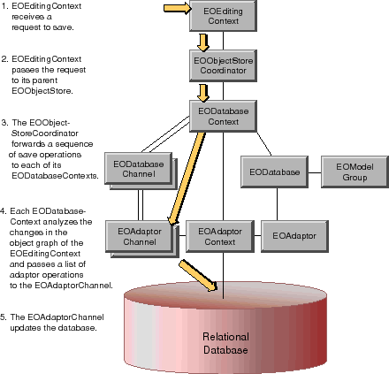

Table of Contents
Table of Contents  Next Section
Table of Contents
Next Section
Table of Contents  Previous Section
Previous Section

Figure 52. Saving to the Database
You can also register to receive the notifications listed below
Locking and Update Strategies
An update operation includes the following ingredients:
The "means of identifying" a row is the primary key or global ID.
An update strategy determines how updates should be made in the face of changes by others. For example, one strategy is to lock a row when it is read so that no one else can change it until you're done with it; this is called pessimistic locking. Another strategy is to compare the state of a row as you fetched it-that is, the row's snapshot-with the database row at update time to confirm that the database row hasn't been changed by someone else. This is called optimistic locking, because it assumes a conflicting update won't occur, but does check at the last minute. You can set your update strategy using the EODatabaseContext method setUpdateStrategy (setUpdateStrategy: in Objective-C). Optimistic locking is the default.
Enterprise Objects Framework also supports "on-demand" locking, in which specific optimistic locks can be promoted to database locks during the course of program execution. In other words, you can lock single objects. There are three ways to use on-demand locking. Use the EODatabaseContext method lockObjectWithGlobalID (lockObjectWithGlobalID:editingContext: in Objective-C) to lock a database row for a particular object. Use the EODatabaseContext method objectsWithFetchSpecification (objectsWithFetchSpecification:editingContext: in Objective-C) with a fetch specification that's configured to lock rows as they're fetched. Or use the EOEditingContext method lockObject (lockObject: in Objective-C).
When you use pessimistic locking, conflicts are detected as soon as you fetch a row. This is because when you fetch a row with pessimistic locking, you attempt to put a lock on it. If someone else has a lock on the row, the lock (and hence, the fetch operation) is refused. Your application can display a panel at that point telling the user to try again later.
Since pessimistic locking puts a lock on a row when it fetches it, you can generally assume that you won't experience conflicts when you save changes. However, this behavior is ultimately dependent on how the database server handles locks.
When you use optimistic locking, conflicts aren't detected until you attempt to save. At that point, the database row is checked against the snapshot to make sure the row hasn't changed. If the row and the snapshot don't match, the save operation is aborted, the transaction is rolled back, and an exception is thrown. To handle the error you can catch the exception, refresh the conflicted object from the updated database data, and save again.
On-demand locking mixes characteristics of both pessimistic and optimistic locking. With on-demand locking, you've already fetched the object, and you're trying to get a lock on it after the fact. When you try to get a lock on the object's corresponding database row, you can get a failure for one of two reasons: either because the row doesn't match the snapshot (optimistic locking), or because someone else has a lock on the row on the server (pessimistic locking).
When on-demand locking fails for either reason, it throws an exception. To handle the error you can catch the exception, refresh the conflicted object from the updated database data, and try to get a lock on it again.
As with pessimistic locking, because on-demand locking locks the row, you can generally assume that you won't experience conflicts when you save changes. Again, this behavior is ultimately dependent on how the database server handles locks.
Table of Contents Next Section